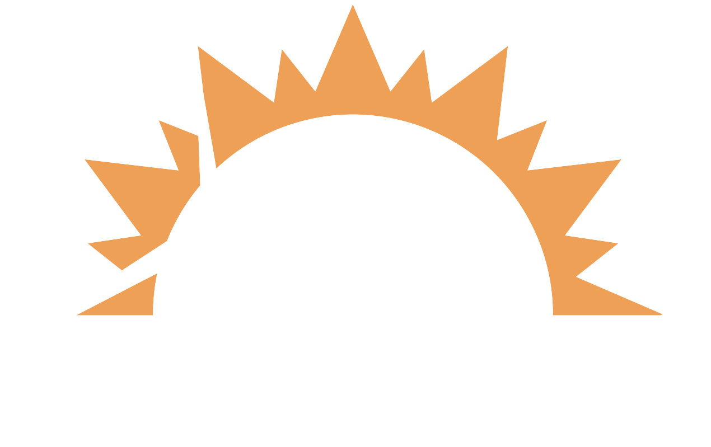

Reel 9:16 estilo dron + texto kinético (sin narrador). Se reproduce en loop. Mercado: Puerto Rico (windmar.com). Servicio: sellado / impermeabilización de techo. Lleva pista de audio (Sport Epic). El audio empieza al darle ▶︎ (el navegador no deja sonar solo).